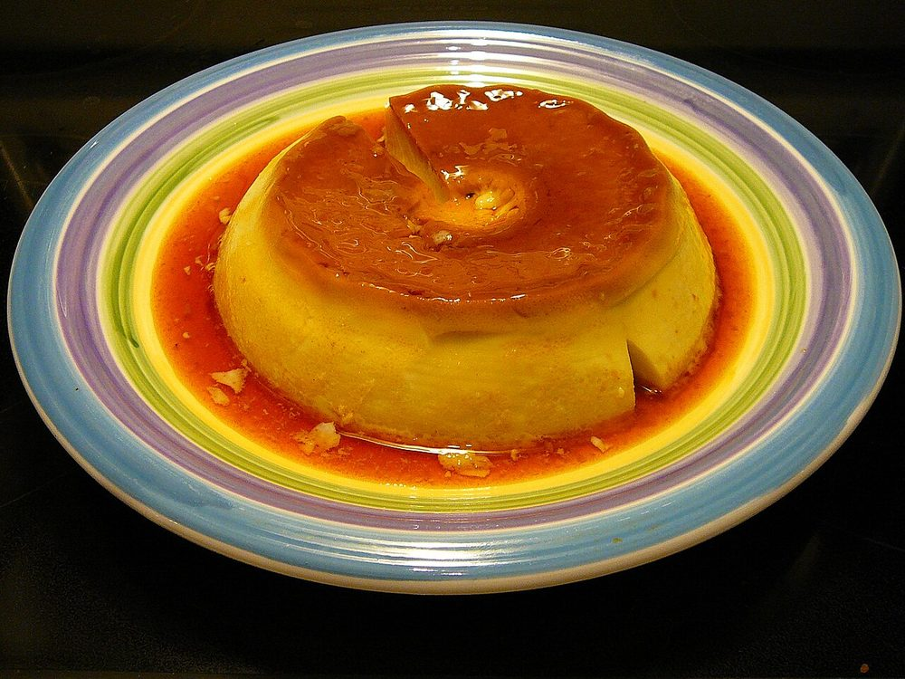

Lagan nu Custard
the dense baked wedding custard, caramel-topped and heavy with nutmeg and cardamom

Contains: milk, egg, tree nuts
Checked against the ingredient list for ten allergens: milk, egg, fish, crustaceans, tree nuts, peanuts, sesame, mustard, soy and gluten. Brands vary, so read the label on anything new to you.
Ingredients
Quantities for 8.
- 1 litre, full fat Milk
- 400g tin Condensed Milk
- 5, large Eggs
- 80g Sugar
- 1 tsp, seeds ground Cardamom
- 1/2 tsp, freshly grated Nutmeg
- 1 tsp Rose Wateroptional
- 20, blanched and slivered Almondsoptional
- 20, slivered Pistachiosoptional
- 1 tbsp, for the dish Ghee
Cookware
oven, stovetop
Before you start
- Reduce the milk well ahead. This is the step that takes the time, and rushing it gives a loose, watery custard.
- Bring the eggs to room temperature so they blend into the warm milk without scrambling.
- Preheat the oven to 160C a full 20 minutes before baking, and set a tray of hot water on the lower shelf.
Method
- Boil the milk in a wide heavy pan and simmer 30 minutes, stirring often, until reduced to about 600ml.Scrape the sides back in as it reduces. Those caramelised scrapings are where the flavour lives.
- Stir in the condensed milk and sugar and simmer 5 minutes more, then take off the heat and cool to lukewarm.
- Beat the eggs until just smooth, with no strands of white remaining.
- Pour a ladle of the warm milk into the eggs while whisking, then repeat twice before adding the eggs back into the pan.Tempering is not optional. Tip cold eggs into hot milk and you get sweet scrambled egg.
- Whisk in the ground cardamom, nutmeg and rose water.
- Strain the mixture through a fine sieve into a ghee-rubbed baking dish about 25cm across.Straining catches the inevitable few threads of cooked egg and is what makes the texture silky.
- Scatter the slivered almonds and pistachios over the surface.
- Bake at 160C for 45 to 55 minutes, until the edges are set and the centre wobbles like a soft jelly when nudged.A cracked, puffed surface means it went too far. Pull it while the middle still moves.
- If the top has not browned, run it under a hot grill for 2 minutes until patched with dark caramel spots.
- Cool completely at room temperature, at least 3 hours, before cutting into squares.
Safe temperatures: Egg dishes are done at 71°C / 160°F; a whole egg when the yolk and white are both firm. Reheat leftovers to 74°C / 165°F. FoodSafety.gov
Storage
Refrigerate up to 4 days, covered. Serve chilled or at room temperature. It is never reheated, and it firms up and tastes better on the second day.
Nutrition Good estimate
Medium protein: 13 g a serving, 14% of the calories
| Per serving227 g | Per 100 g | |
|---|---|---|
| Calories | 366 kcal | 162 kcal |
| Protein | 13.0 g | 6 g |
| Carbohydrate | 45.2 g | 20 g |
| of which sugars | 44.1 g | 19 g |
| Fibre | 0.8 g | 0 g |
| Fat | 15.5 g | 7 g |
| of which saturated | 7.4 g | 3 g |
| of which unsaturated | 6.9 g | 3 g |
Estimated from raw ingredients using USDA FoodData Central.
Times, yields, allergens and nutrition are guidance. Use your own judgement on doneness and on storing. More in About.